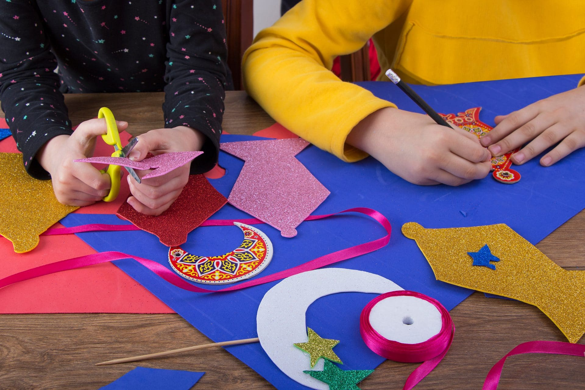
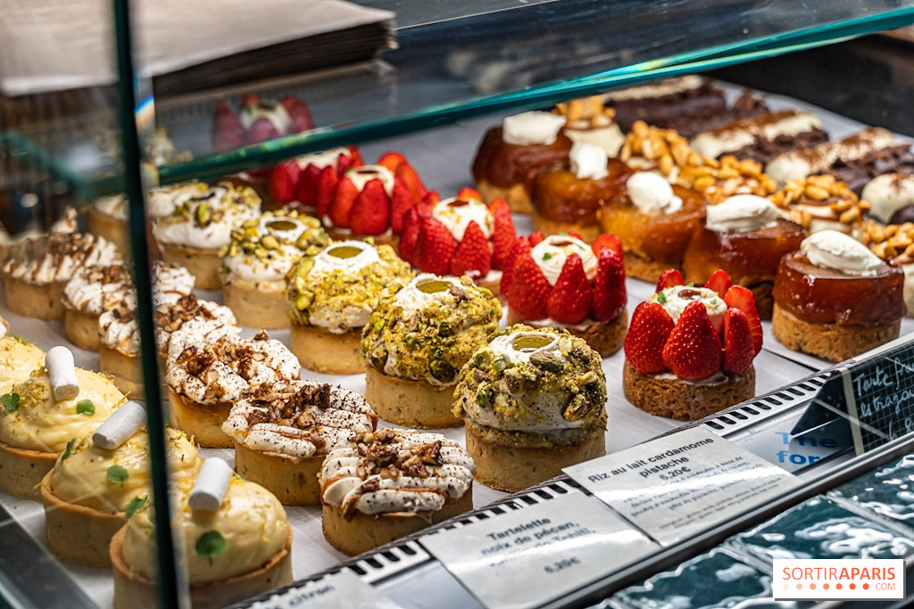
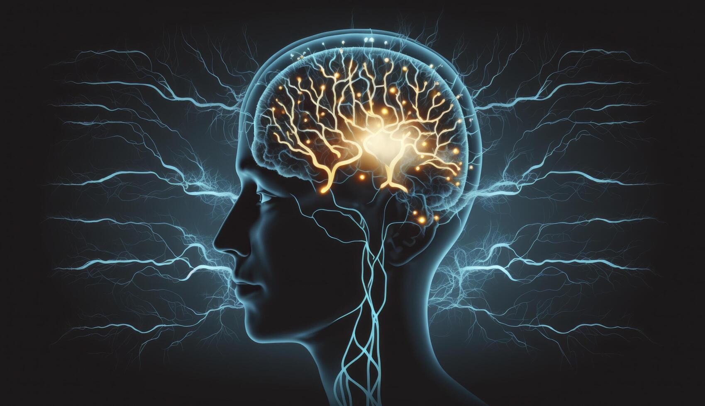

Mes passions
| Accueil | Productions scolaires | Mes passions | Mes videos | Mon site de rêve |
|---|
Dans ma vie,j’ai de nombreuses passions. La lecture occupe une place très importante pour moi, surtout les romans et les chroniques sur Wattpad. J’aime particulièrement les romances, les longues histoires d’amour,et d’amitiés . J’aime bien quand les livres sont long car je peux rentrer complètement dans l’histoire et ressentir chaque émotion des personnes je peux ,m’identifier à eux et imaginer chaque scène comme si j’y étais.
Je suis aussi passionnée par les activités manuelles comme peindre, dessiner (même si je ne me trouve pas très douée), créer des bracelets quand c’est l’été… Le scrapbooking fait aussi partie de mes petits activités : noter les lieux que j’ai visités, préparer des to-do lists,( même si je ne suis pas toujours très organisée ),bien rempli ma boîte à souvenir…
J’aime également écrire, poser mes pensées sur le papier,écrire des poèmes…¨
J’apprécie beaucoup de sortir, découvrir de nouveaux endroits pour manger, tester des adresses autour de Roubaix, Tourcoing ou Wattrelos. J’aime autant goûter que cuisiner : cookies, layer cakes, pâtisseries… Car cela me permet de faire partager ainsi que de passer un peu le temps. J’aime aussi rester chez moi pour me poser, regarder des films, des séries ou des vidéos sur YouTube .
Je m’intéresse aussi beaucoup à la psychologie : la trisomie, l’Alzheimer, le trouble du comportement…J’aime aussi tous ce qui est paranormal et qui s’explique pas.
  